KMySync – User Manual
Record cash on the go – and process it in KMyMoney.
1. What is KMySync?
KMySync is a mobile companion to the desktop finance software KMyMoney. Use it to record cash expenses, income and transfers on the go – right on your phone or a Wear OS watch – and transfer them into KMyMoney later, instead of typing everything in by hand.
The app works fully offline and without any vendor account: data is exchanged with KMyMoney through a folder you provide yourself (Nextcloud, WebDAV or SMB/Samba). There are no ads and no tracking.
Key terms
- Booking: a single money event (expense, income or transfer).
- Account: e.g. «Cash», «Checking». Every booking belongs to an account.
- Place (holding): where an account's cash physically is (wallet, jar, envelope …).
- Category: what the money was spent on or received for (e.g. «Groceries»).
- Alias: a learned mapping «spoken term → correct payee» together with account/category.
- .kmy: KMyMoney's file format that is exported to and imported from.
2. Your first booking in five minutes
This chapter walks you once through the whole cycle: set up, book, transfer. It names only the straight path and no exception. Everything else – every field, every subtlety – follows in the later chapters.
- Set up the connection. On first start the welcome assistant appears. Choose your language, then «KMyMoney file (.kmy)» as the format, and enter your server (Nextcloud, WebDAV or SMB). «Test connection» tells you right away whether it works.
- Pick your KMyMoney file. «Choose .kmy» lists the files in the folder you configured. Take the one you work with on the desktop.
- Import your accounts. «Import accounts» lists the accounts in that file. Tick the ones you need while out and about – usually a cash and a checking account. «Done» closes the assistant.
- Record your first expense. Tap the round ✚ button at the bottom right. Enter the amount, pick payee and category from the list, then «Save as new». The booking appears in the list immediately.
- Transfer it to KMyMoney. Tap the export symbol ⬇ in the title bar. The app fetches your .kmy from the server, writes a backup, adds the new bookings and puts the file back. On the desktop you then open it as usual.
That is the entire cycle. From now on only steps 4 and 5 repeat: record while you are out, export when it suits you. Each booking is transferred exactly once.
No KMyMoney file? In the assistant pick the format CSV instead of .kmy. The app then exchanges one CSV file per account. Everything else stays the same.
Where to go next: the welcome assistant in detail is in the next chapter, recording a booking in Chapter 8, syncing with KMyMoney in Chapter 17, and every single setting in Chapter 19.
3. Getting started
Welcome assistant on first start
As long as no account exists yet, a slim welcome assistant appears automatically when the app starts. It bundles the most important starting points in one place and can only be opened automatically (no menu entry).
- Choose the language (takes effect immediately).
- Import/export format: CSV or KMyMoney file (.kmy).
- Synchronisation: server type, URL, user, password – with «Test connection»; in .kmy mode also «Choose .kmy».
- «Import accounts»: the same selection dialog as «Add account», right here in the assistant.
- «More settings» opens the full settings; «Done» closes the assistant.
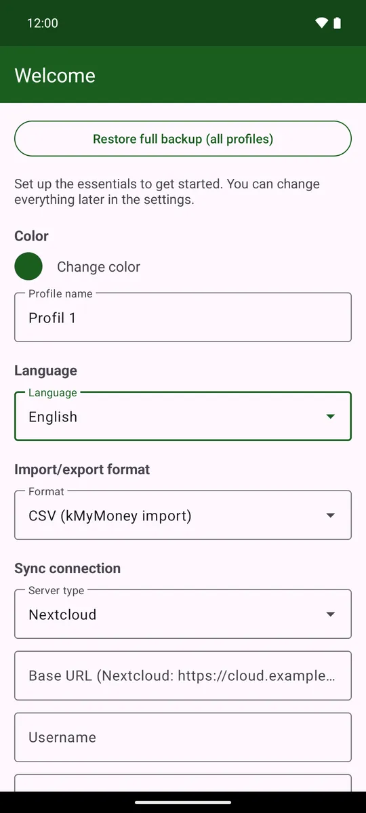
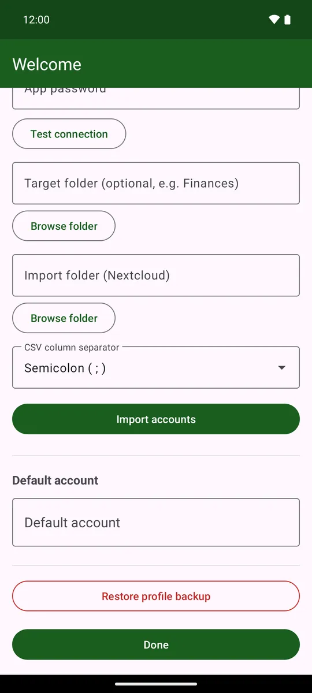
Important – an account first: create at least one account – in the assistant via «Import accounts» or later in the account drawer (☰ top left) via «Add account». The default account and the options that depend on it (e.g. places per account) can only be set once accounts already exist.
All settings in detail – language, number format, currency, server connection, export mode, default account, alias names, app lock, backup and more – are explained in the «Settings» chapter at the end of the manual (Chapter 19). They are reachable any time via the ⋮ menu at the top right, entry «Settings» at the very bottom.
4. The main screen
The main screen shows the green title bar at the top, the balance line below it, and then the list of bookings. The action buttons are at the bottom right.
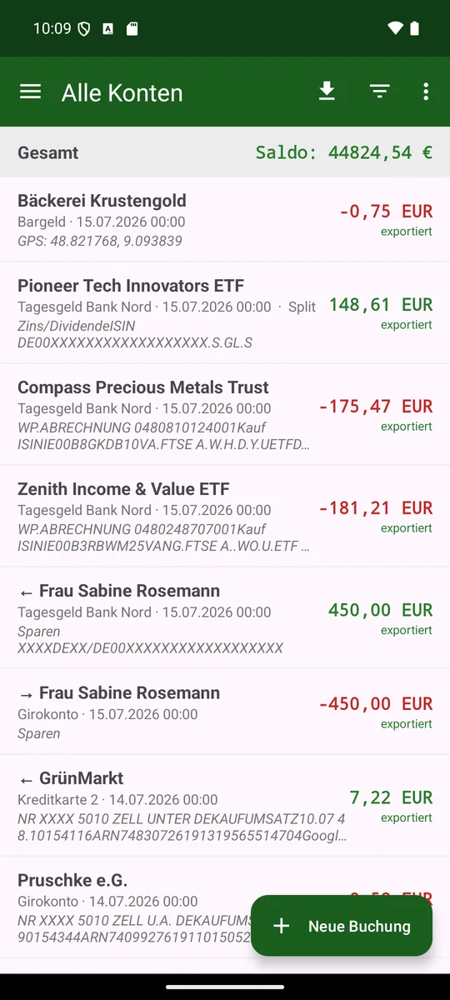
Balance line (tap to cycle)
The coloured line below the title bar shows a balance. Tapping it cycles through, in order:
- Account: balance of the currently selected account (only when a single account is selected).
- Total: sum of all accounts.
- Net worth: all accounts + current portfolio value (only after a portfolio was imported).
- Places: balances of the account's individual cash places.
- Filtered: sum of the currently filtered bookings (only when a filter is active).
A green amount = positive/credit, a red amount = negative.
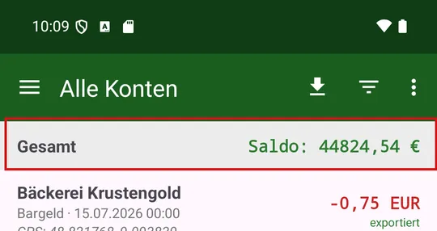
Home-screen widget
For the launcher there are four widgets. All of them show the default-place balance (default account → default place), and tapping the balance opens the app.
- small (2×1): the balance only.
- medium (4×2): the balance and three quick actions – booking, voice, amount.
- large (4×4): a balance header with refresh, the most recent bookings and the action bar.
- type (4×2): like on the watch – three coloured icon buttons for income, transfer and expense, plus a grey switch button, with the balance below.
What the buttons do
On the medium and large widget the buttons launch «New booking», voice entry, amount-only entry or Holdings – each of them inside the app.
The type widget goes one step further: a type button starts speech recognition immediately and creates the booking directly, without opening the app (only the system voice dialog appears). The grey switch button cycles through the chosen account and its places; the balance and the target of the next booking follow that selection.
Refreshing happens when the app is opened and at regular intervals.
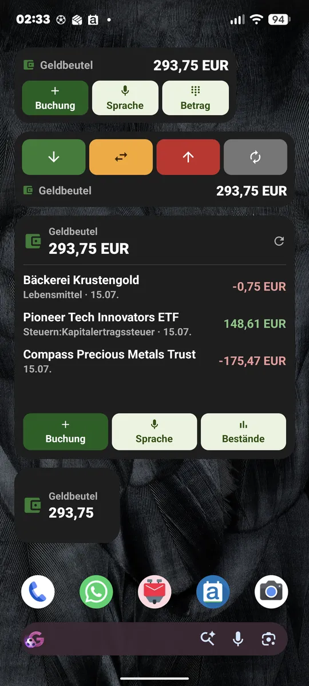
5. Symbol and control reference
This overview explains every symbol in the app and what it does.
| Symbol | Name | Meaning / function |
|---|---|---|
| ☰ | Menu / account drawer | Top left. Opens the side drawer with all accounts, portfolios and «Add account». |
| ← | Back | Top left on sub-screens. Returns to the previous screen. |
| ⬇ | Export / synchronize | Title-bar symbol (down arrow, download style). Starts the sync: writes new bookings into the .kmy or uploads them to the sync target. |
| ▽ | Filter | Funnel symbol. Opens the filter by payee, category and amount. |
| ▮▮ | Analysis | Bar-chart symbol. Opens the graphical analysis. |
| ⋮ | More items | Three dots (overflow). Contains «Categories», «Holdings», «Budget», «Scheduled» and – at the very bottom – «Settings». |
| ✚ | New booking | Round button at the bottom right. Short tap: record a booking. Long press: voice input. |
| ⊞ | Silent amount entry | Keypad symbol (only when location is enabled). Type just the amount; the payee is resolved via your location. |
| ↑ | To top | Small arrow. Jumps to the top of the booking list. |
| ★ | Preferred alias | Marks a preferred alias in the alias list (considered before bookings). |
| → | Alias mapping | In the alias list: «spoken term → correct payee». |
| → / ← | Transfer | In the booking list: → outgoing, ← incoming transfer (shows the counter-account/payee). |
| Split | Split booking | Marks a booking that is split across several categories. |
| exported | Exported | Small green hint: this booking has already been exported. |
| ● red/green | Amount colour | Red amount = expense/negative, green amount = income/positive. |
Note: the title-bar symbols come from the Material Design set; their meaning is described above. Depending on space, some items appear in the «⋮» overflow menu.
6. Accounts and the account drawer
The account drawer is the list of your accounts. ☰ at the top left opens it; a tap on an account shows its bookings, a long press fetches it afresh from KMyMoney. Day to day that is all you need. The rest of this chapter explains how to group, search and sort accounts.
- Open it via the ☰ symbol at the top left, or by swiping in from the left edge.
- «All accounts» shows all bookings together; a single account filters the list to it.
- Long press on an account: import/update that account from the .kmy.
- Long press on «All accounts» – or pull down in that view: reloads everything (accounts, portfolios and scheduled transactions) in one pass.
- Portfolios sit at the bottom under the «Portfolios» heading and behave just like accounts: a short tap opens the portfolio view (the selected portfolio stays highlighted), a long press updates it.
- «Add account» (at the bottom): loads the .kmy and offers the contained accounts for selection.
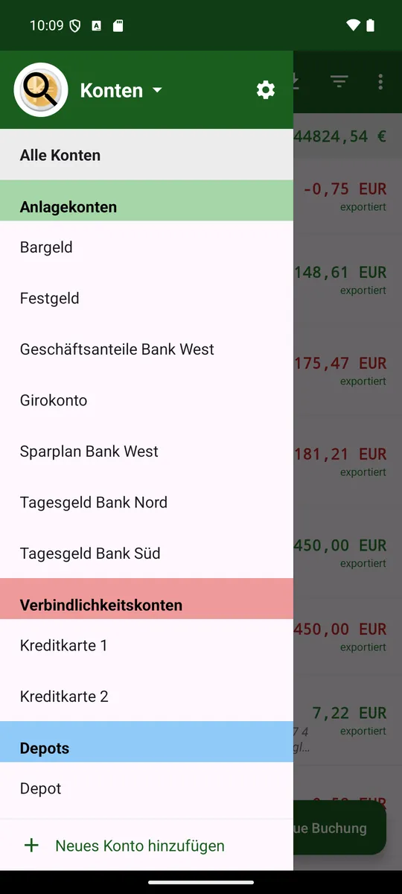
Account groups
Besides the account kind (asset, liability, portfolio) there are account groups for your own ordering – «Favourites», «Joint» or «Savings», say. An account may sit in any number of groups; the grouping by account kind is unaffected.
Choosing a group
Tapping the «Accounts» heading drops the groups down as a list; the one in force carries a tick. The drawer then lists only its accounts, and the top row carries the group name instead of «All accounts».
The choice applies app-wide: the booking list, the balance bar and the holdings view all follow it. In the balance bar the group appears as an additional first page; «Total» still means all accounts.
Where the groups come from
Each row carries the mark of its origin: a folder for groups you created, a bank building for those from the institutions block of the .kmy (e.g. «Volksbank»), a star for the «Favourites». The latter two merely mirror the file – only the import writes them, they cannot be edited by hand.
The «Favourites» come from the accounts marked as preferred in KMyMoney (its account dialog, «Preferred account»). They sit at the very top of the picker, are rebuilt on every import, and their name follows the language of the app.
When a group disappears
Removing the last account from a group (or deleting that account) makes it disappear without asking – there are no empty groups. That is also how you get rid of a group again. Once no account is preferred any longer, the «Favourites» likewise disappear.
Groups holding nothing but closed accounts no longer show up in this picker. They stay selectable in an account's «⋮» menu so they can be revived.
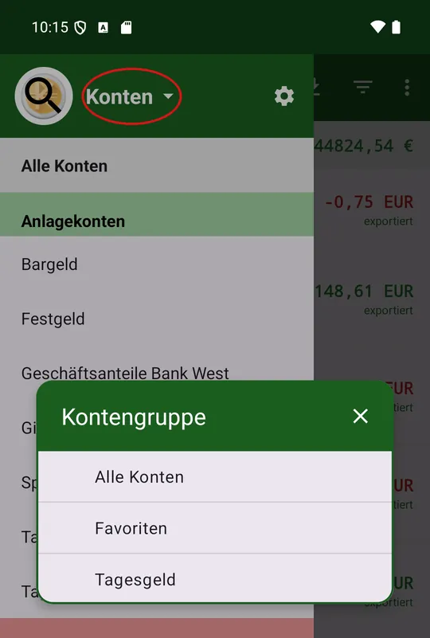
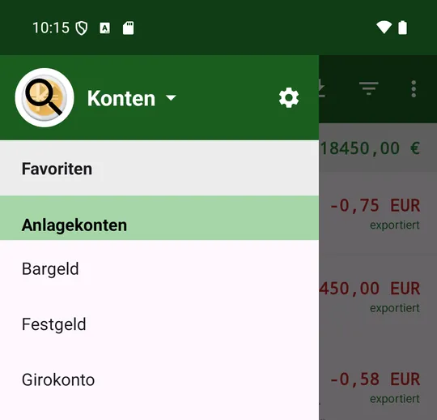
Searching accounts
A magnifier sits on the kMyMoney emblem at the top of the drawer. Tapping it opens the keyboard, and for the duration of the search your input takes the place of the «Accounts» heading. What you type filters the account list instantly by part of the name – «kasse» thus also finds «Sparkasse» and «Barkasse».
Closing the keyboard puts the heading back in its place – but the term stays in effect, so the list still shows only the matches. The magnifier now carries a small cross to signal that a filter is on; tapping it lifts the search.
The search stays inside the chosen account group and is never stored. It also ends by itself as soon as you pick an account, close the drawer or leave the app.
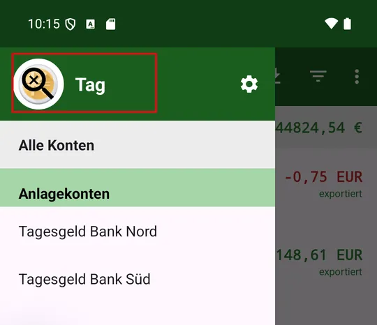
Sorting and managing accounts
The gear icon next to «Accounts» opens a view of its own. Unlike the drawer it also shows closed accounts, in grey, each with its balance on the right.
Changing the order
Drag the handle to sort accounts within their account kind. The order applies everywhere accounts are listed – including the pickers while recording a booking. Drag a whole account kind and its accounts collapse for the duration of the drag, leaving only their number; that way even a large block reaches its place in a few movements.
Putting an account into a group
The «⋮» on an account row opens your own account groups as a tick list. The tick says whether the account sits in that group; set and clear as many as you like, nothing is written until «OK». On top there is a free field for a new group – typing into it ticks its box by itself.
Closing and reopening an account
The same tick list carries, next to «OK», a «Close account» (or «Reopen account») button; it applies the ticks along the way. Closing is offered only at a balance of 0. If a closed account regains a balance on import, it reopens by itself.
Special case: groups from the .kmy
Banks and favourites are not in the tick list. Type one of their names into the free field and the dialog stays open with a note, writing nothing – an assignment by hand would be gone again at the next import anyway.
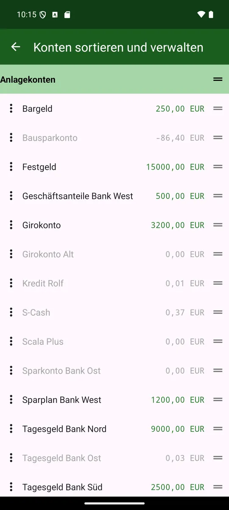
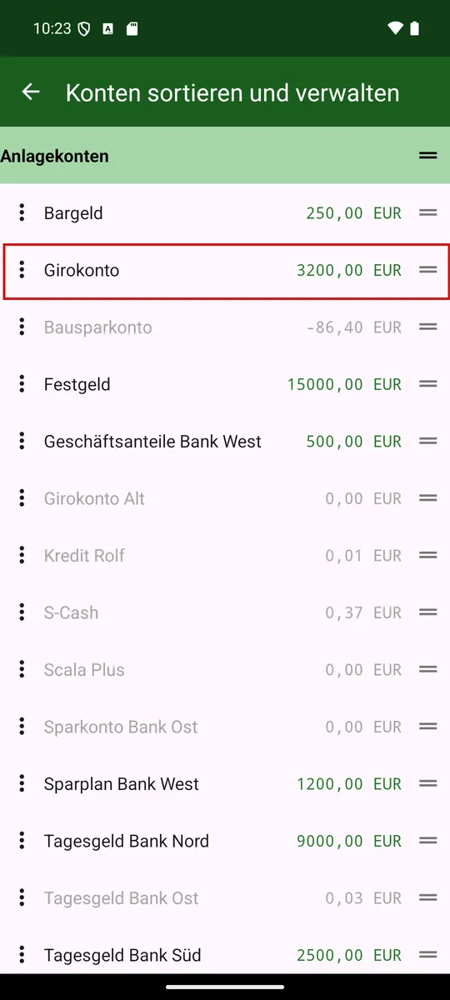
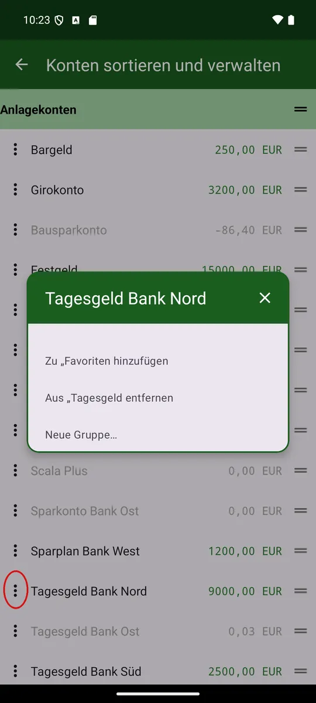
7. Multiple Profiles
A profile is a fully separate set of data: its own accounts and bookings, its own server connection, its own currency, number format and accent colour. Handy for keeping personal and business separate, or when several people share the same device. The welcome assistant creates the first profile automatically on first start; further ones are added through the settings. Only one profile is ever active.
Switching profiles
- Menu ⋮ → Switch profile opens the list of all profiles; the active one is marked «(active)».
- Tap another profile to switch to it instantly, without restarting the app.
Creating a new profile
In the settings, «Create new profile» adds another profile – the same short assistant as on the very first start (Chapter 3): language, server, done. The new profile becomes active right away.
Editing a profile
A long press on a row in «Switch profile» – or its ⋮ menu, entry «Edit profile» – opens the full settings screen for that profile: currency, number format, dividends, budget, places, alias names, deleting/closing accounts, backing up and resetting the profile. If the profile is not active yet, the app switches to it first.
Rename, change colour, delete
The same ⋮ menu also offers «Rename» and «Change colour» (the accent colour of buttons and the toolbar, for this profile only). «Delete» removes the profile along with its bookings and accounts irreversibly – available only from the second profile on, one must always remain.
Device-wide instead of per profile are language, dark mode, app lock and the reminder for due bookings – these settings apply to all profiles alike.
8. Recording a booking
Tap the round ✚ button. The booking editor opens. An ordinary expense is recorded in four steps:
- Type the amount.
- Pick the payee or type a new one.
- Pick the category – usually it is already there.
- «Save as new».
Account, date and place are pre-filled and need attention only if something else should apply. The rest of this chapter explains the fields one by one.
Picking a value – the same everywhere
Payee, account, category and place fields are display, list and search box in one – in the booking editor just as in transfers, reconciliation, the filters, the alias editor, the settings and the analysis.
- Entering the field: the current entry steps aside and stays on only faintly; the full list opens.
- Typing: the list narrows as you go. Matches are found anywhere in the name and regardless of case – "kasse" finds "Sparkasse".
- Deleting characters: the list widens again. Empty the field and everything is back.
- Tapping an item: it goes into the field and the keyboard closes.
- The Done key (bottom right on the keyboard): finishes the entry and closes the keyboard without you leaving the field. If typing leaves exactly one match, it is taken – "visa u" is enough for "Visa Urlaub". With several matches the same rule applies as when leaving the field.
- Leaving without a choice: the previous entry returns.
A new payee may be created this way: type a name that does not exist yet and it stays. Account, category and place have to come from the list – an invented name is replaced by the previous one when you leave the field. New accounts arrive through the import, new places are created in the settings.
Account fields put what you are most likely to need at the top: first your favourites (star), then the accounts of the currently selected account group (the group's own icon), then all the rest with the icon of their account kind. Your own account order is kept within each block.
What the app suggests for you
If the location is known, the payee list heads with a few nearby payees marked by a bearing arrow – as soon as you start typing, this suggestion disappears again.
Pick a payee and the app fills in the matching category right away. Change a category row yourself and it stays put, no longer overwritten.
Optionally (switch on in the settings under «Use amount for payee suggestions»), the typed amount alone can suggest a nearby payee, if it clearly matches one.
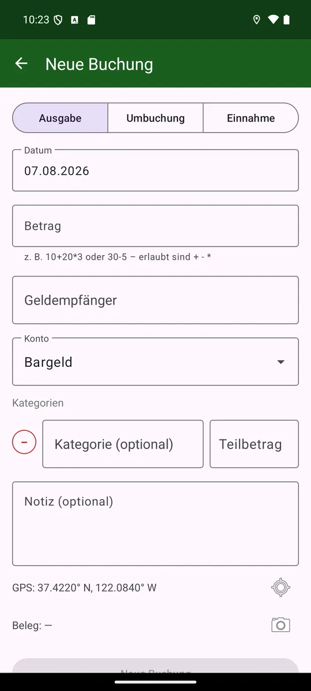
Arithmetic in the amount field
The amount field accepts a small calculation instead of the system keyboard (e.g. 10+20*3 or 30-5) – handy when splitting a bill or offsetting several items.
Fields and controls
- Type switch: Expense · Transfer · Income. Sets the kind of booking.
- Amount, payee (optional), account (chosen from existing accounts).
- Date: pre-filled with today; the «Today» button quickly sets the current date.
- Note: free text. With location enabled it automatically contains «GPS: lat, lon».
- Place (only for expenses/income created in the app): which cash place the booking is credited to.
- «Exported» toggle: marks whether the booking has already been exported.
The payee may be left blank – as in KMyMoney, where it was never mandatory. Where it is missing, the booking list, the widget, the budget and the category breakdown show the category in its place. If the amount is split across several categories, they show «Split transaction» instead, because otherwise only the largest of the categories would be visible and nothing of the split. If the category is missing too, they show «*** UNASSIGNED ***» – the same text KMyMoney uses in this case. There as here it is display only, not a category that actually exists.
Saving
- Save as new: creates a new booking.
- Update: saves changes to an existing booking.
- Delete: removes the booking.
Date prompt when copying: if you open an existing booking, leave the date unchanged and «save as new», the app asks whether the old date or today should apply.
Split booking (several categories)
In the «Split categories» section you can enter several categories with partial amounts. With one category the total and category amount are linked; with several, the sum must equal the total. Partial amounts may be negative.
Transfer
Choose the type «Transfer», then the From and To accounts plus an optional payee. This creates a linked booking in both accounts (marked → or ← in the list). You can also choose a from-place and a to-place; then the respective place journal is updated (from-account −amount, to-account +amount). Both fields are preset with the default place of the respective account; «no place» leaves that side's journal untouched. Editing or deleting the transfer rolls the place movements back.
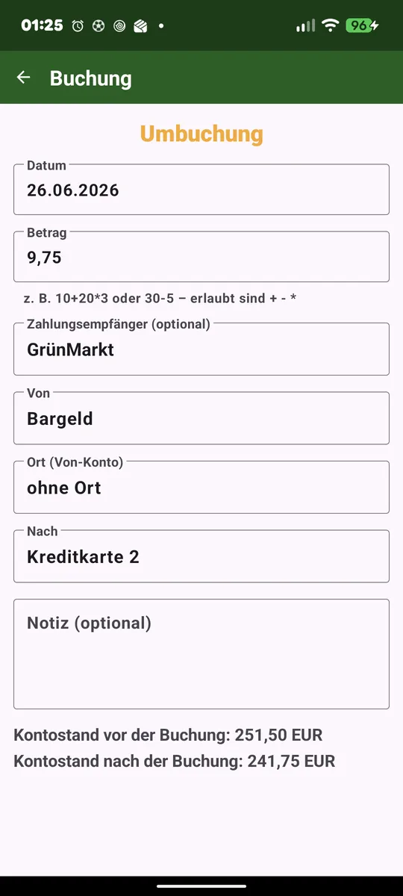
Tags
KMyMoney has tags: freely maintained keywords such as «Holiday» or «Tax», any number of which a booking may carry. Below the note field there is a «Tags» row for them.
The pencil symbol opens a window listing every tag; a field below adds another one, the bin symbol clears all of them at once. Only what already exists in KMyMoney can be entered.
Tags work the same for expenses, income and transfers. If the app does not know any tags yet – in CSV mode without a KMyMoney file, say – the row does not appear at all.
9. Securities - Portfolio
The portfolio displays your securities from KMyMoney and allows you to record buys, sells and dividends – both manually and through automatic PDF recognition of bank statements. This chapter covers the portfolio view and its features.
Securities bookings: buys, sells and dividends
The portfolio supports recording buys, sells and dividends for securities – but only for securities you have already set up in KMyMoney. The app does not create new securities.
Two ways: You can either record a transaction manually in the booking editor (date, shares, price, fees, taxes) or let the app try to recognize the values automatically from a PDF statement from your bank. For manual entry, simply fill in all fields as usual and save.
The portfolio view
After importing a KMyMoney investment account, the portfolio appears in the account drawer. The view is structured like a regular account view – same title bar, same drawer, same filter – and shows for each security quantity × price = current value. Fully sold securities are hidden.
The balance line cycles through on each tap: portfolio value → buys → sells → dividends → net invested (buys − sells − dividends) → gain/loss (in colour, with percentage). Sells and dividends only appear if there are any. The portfolio value is tracked separately and also appears as «Total assets» in the balance line of the main screen.
Tapping a security opens its transactions in full screen – buys in green, sells in red, dividends in neutral – with the same figures for that security, a filter for buys, sells and dividends, and a date slider starting from the first purchase.
Filtering positions
The funnel ▽ in the portfolio toolbar filters like in the booking list: by name, by value – and additionally whether active holdings and/or closed positions (zero shares) are shown. Default: active only.
Opening a securities booking
A securities purchase also appears in the booking list of the settlement account – as a transfer between that account and the security. When you open it, amount, payee, accounts and date are locked. Why: quantity and price belong to this booking but only exist in the KMyMoney file. The app doesn't know them – if it could rewrite the booking like a regular transfer, the securities purchase in your file would become a bare transfer and destroy the portfolio there.
What can be changed are exactly the three things KMyMoney doesn't need itself for such a booking: the note, the tags and the receipt – your bank's statement as a PDF, for instance. On the next export the app adds them to the existing transaction without rebuilding it: shares, price and type of movement stay untouched. That way you find the statement again even after re-reading the portfolio.
Deleting works – unlike editing
«Delete» is available here, and it takes the associated portfolio transaction with it; otherwise a transaction without a cash booking would remain in the portfolio. Unlike editing, deleting removes the whole transaction at once, nothing stays half-finished.
If the booking is already in the KMyMoney file, it will be removed there too on the next export. Undo is not available.
A short tap on a transaction shows the numbers behind it: for buy and sell number of shares, share price, amount, fees and the resulting total (charge on buy, credit on sell); for dividends the quantity held, gross dividend per share, gross amount, taxes/levies and net amount; for in- and out-bookings the quantity. Fees only appear after a fresh portfolio import – otherwise the line is missing.
For inflows and outflows KMyMoney only knows the quantity, not the cash value. A long tap on such a line opens a dialog to enter the value manually (using the same calculator keyboard as elsewhere in the amount field) – it then counts as a purchase or sale at cost price and gain/loss and survives a fresh portfolio import.
Analysis (pie chart)
The «Analysis» menu opens a pie chart of the securities, styled like the categories page. Tapping a segment shows the name and amount of that security.
At the top a symbol switcher chooses the view: current value, net invested, dividend total or gain/loss. Below, a date range filter narrows the analysis.
An icon in the menu bar shows or hides fully sold securities (hidden by default).
Read PDF statements automatically
The portfolio view can read securities statements as a PDF and automatically prepare transactions from them. The first time you manually check and confirm the values – the app learns the rules for that bank while you do. Then on subsequent statements from the same bank the app automatically fills in the values. How the recognition rules work in detail and how to adjust them is covered in the next chapter.
10. Recognition rules for PDF statements: learning and managing
The PDF recognition feature (enabling under Read PDF statements) works on a simple principle: you show the app the first time where the values are located, and the app remembers the rule for all subsequent statements from the same bank – until you change it.
The first statement from a bank: You download a PDF, open the portfolio and tap «Read PDF». The app tries to recognize the values (date, shares, price, fees, taxes etc.) automatically. It shows you the result for review – just like manual entry. Each value you enter or correct is learned: the app records where in this PDF the values were (which label, which line) and how you named the values (which category, which label at the bank). After you confirm («Store»), the app applies the rules immediately to the same PDF – as a test. If the result fits, it saves the rules and you can book. If not, it opens the rules page right away, where you can see and correct the just-learned rules.
Subsequent statements: The next PDF from the same bank, the app automatically fills in all values – you only need to review and can book directly. Should the bank's format change (new columns, different labels), review the values and confirm with «Store» – the app updates the rules automatically.
Adjust recognition rules: If a learned rule no longer fits or you want to correct it manually, open the portfolio and tap ⋮ → Recognition rules. You see all the rules learned so far, sorted by bank. Tapping a bank shows its rules: for each field (date, amount, fees etc.) there is the learned label (what the bank calls the row), the position (which row, which column), whether there is a fixed fee per trade, and further details. You can delete each rule individually so the app learns it fresh the next time from that bank – or you edit the rule and manually adjust the label, position and options.
Share and import rules: What your app has learned about a bank can be passed on: ⋮ → Share rules on the rules page sends this portfolio's rules as a small JSON file – by mail, messenger or into the files app. It holds only the labels and reading rules, no amounts and no securities. The other way round, ⋮ → Import rules takes such a file into the open portfolio and replaces its previous rules – a prompt names beforehand what the file holds. That way you get the rules for your bank from someone who banks there too, without typing a single label yourself. And if one of your statements is not recognised, you send the rule it hinges on instead of describing it.
Picking values from a table
Tapping the date field in the form, or a label field on the rules page, offers the entries the app found – each by both routes where both exist: via the label beside the value and via the column heading above it. So if «Value date» sits as a heading above the date and «as of» beside it, both lines appear, the column variant stating how many lines below it reads. Whatever you tap is stored exactly like that – the app does not decide for you which label the bank will keep in its next statement.
Values inside a table
Some banks do not put the figures behind a label but under a column heading. The data row then starts with a number and carries no label of its own. For such statements «on one of the lines below» means: the next line that carries a value at all – up to three lines away. That skips a second header line, which some banks insert. If the search gets stuck on an in-between line that happens to carry a number, pick «exactly 1, 2 or 3 lines below» instead.
A table row often carries several entries of the same kind – the booking day first, the value date next to it. Which one is meant is set by «Which number on the line»; it applies to dates as well. For dates the default «the last one» still means the first entry after the label, out of consideration for older rules – if you want another, pick «the first (table column)» or «the 2nd from the left» explicitly.
In the label's column: In a table, counting only works as long as every column is exactly one number wide and none is missing. When the label is a column heading, pick «the number in the label's column» under «Which number on the line» instead: the app then takes the value that sits below (or above) the label on the page. That holds even when a later statement omits a column. The choice is offered only together with «below» or «above» – on the same line the label's column would be the label itself.
Values above the label: Some statements print the number first and name it underneath. For those there are «on one of the lines above» and «exactly 1, 2 or 3 lines above» – the mirror image of «below».
Help while typing: under «Check statement», next to the result, sits the button «Text with line numbers». It shows the statement the way the app reads it. That is necessary because its lines are not the lines of a PDF viewer: they come from the word positions, and a visually empty line does not exist there at all. For counting the distance it is the only reliable source.
Multiple categories for fees and yield
Just like in the booking editor, «fees/taxes» – or on a dividend the «yield» – can be split across multiple categories. In the entry form the button «+» below the line adds another category; the sum of all lines must match the amount above.
The same button sits on the rules page: each sub-line gets its own recognition rule – label, direction, position, just like a normal field. When you say «Store», the app automatically creates such a sub-rule for each category line whose label it finds in the statement.
If a remainder is left over that does not appear on the statement – for instance a bank fee that some institutions do not print – the app remembers only this remainder as a fixed fee, not the whole amount. On the next read it appears as its own, last category line alongside the recognized ones.
A fee not listed on the statement
Some banks charge a fixed amount per trade without listing it on the statement. A rule cannot find it – it looks for a label and there is none. On the rules page, therefore, under fees sits a field «Fixed fee per trade» with its category.
Whether this amount takes effect is decided by the toggle «Add multiple lines». If the rule finds no fee in the statement the fixed value applies. If it finds one and the toggle is on, the fixed value is added. If off, the found fee wins and the fixed value is ignored.
The total amount has a corresponding toggle: «Fixed fee is already included in the total amount». Off = the amount debited is higher by the fee than the number on the statement – on a sale the credit is lower by it – and the app adds it up. On = the total amount stays as it is.
Recognized automatically: If you enter a total amount and a fee during entry, both of which do not appear on the statement, the app tries the difference – i.e. the amount without the fee. If it finds it, it learns the label and enters the fee as a fixed trade fee. This is the only value the app does not read but deduces; the prompt mentions it explicitly with the amount.
11. Recording quickly: voice, location, receipts
This chapter collects the ways a booking can be created with just a few taps: speak it, type only the amount and let the app guess the payee from your location, attach a receipt, and teach the app a mapping as an alias.
Voice input
Long press the ✚ button to open voice input. Say, for instance, "hairdresser 20 euros": the app looks for a matching template (payee, account, category, booking type) and opens it with today's date and the spoken amount.
Nearest payee
If there are several payees with the same name (e.g. «REWE Location 1» and «REWE Location 2») and the location is known, the app picks the geographically nearest one.
Amount only (number pad ⊞)
With location enabled, a number-pad symbol appears at the bottom. Type just an amount: the app looks for a matching payee at your current location and shows it before you save.
If several known payees are near you (petrol station and car wash), the amount helps guess which one – as you type, the suggested name changes. Tapping the name cycles through the other candidates and finally «no payee». This requires the switch «Use amount for suggestions» (off by default) – without it, only distance counts.
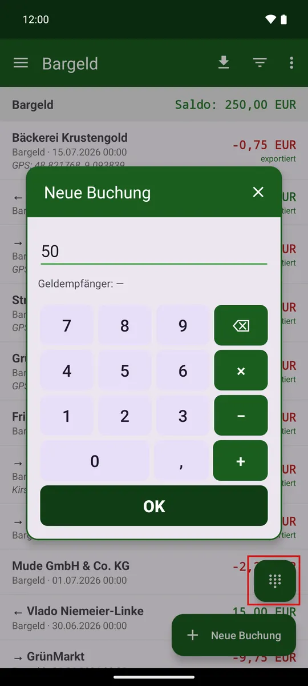
Receipt photos
In the booking editor, the «Receipt» button attaches a photo (camera or gallery) or a PDF document – multiple pages if needed, for a long receipt for instance. This works for every booking type, including transfers.
Images are stored privately and uploaded in the background to the «Receipts» folder of your sync folder; ones taken offline follow once a connection is available again. The reference stays in the note, so the app finds the photo again even after a fresh import.
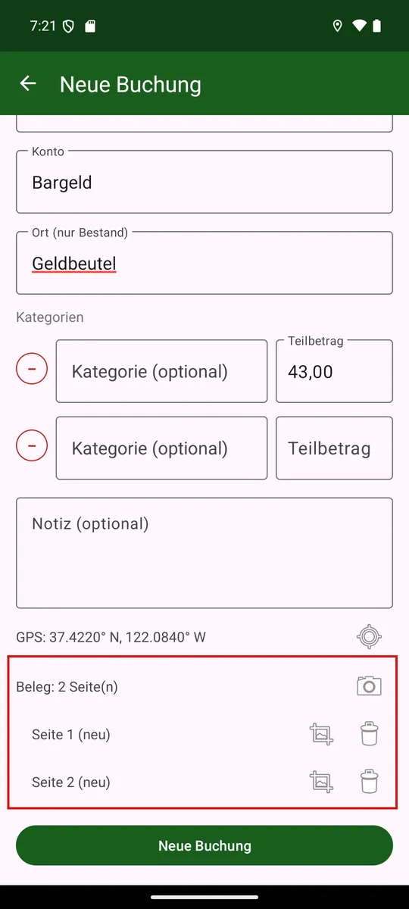
A built-in viewer shows the pages: swipe to flip through, pinch or double-tap to zoom in on fine print.
Delete a booking and its receipts disappear only on the next app start – not immediately, so «Undo» right after deleting still brings the receipt back.
Exporting the receipts of a filter
In the (⋮) menu of the booking list, «Export receipts» packs all receipts of the currently filtered bookings into a ZIP file with readable file names (date, payee, amount) – handy for a tax advisor, for instance. The entry only appears when a filter is set.
Cropping and straightening receipt photos
Right after taking the photo, the app asks whether you want to edit it. With «Keep as is» it stays unchanged; later you can always reach editing via the crop symbol on the receipt row.
Drag the four corners onto the receipt: «Rectangle» crops straight, «Trapezoid» straightens a receipt photographed at an angle. Two sliders adjust brightness and contrast, useful for faded receipts.
The unedited original is always kept – you can start over from it at any time.
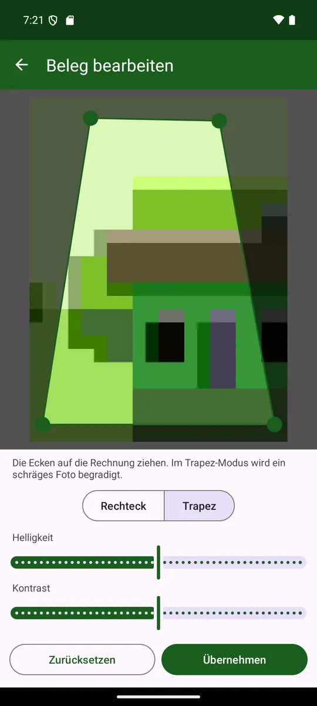
Aliases (learned mappings)
If you change the recognized payee while saving, the app offers to remember the mapping as an alias – including account, category and place. That way «Mum €100» is automatically booked to the real name with the right account in future.
An alias can hold several locations (e.g. multiple branches) as well as a «usual amounts» range that helps guess between several payees at the same place. An alias also remembers tags: they are pre-filled for the next booking to that payee automatically.
Aliases can be created, changed and deleted at any time under Settings → Aliases.

12. Booking list and filter
- Short tap on a booking opens it as a read-only view: a large coloured heading shows the type (income = green, transfer = yellow, expense = red), and the balance before and after the booking is shown at the bottom.
- Long press opens it for editing.
- Pulling down re-reads the file in the kmy variant and refreshes exactly this account or portfolio. In the CSV variant this goes through the account drawer (long-press the account).
- Markers on a row: «Split», → / ← for a transfer, «exported»; the colours red and green stand for expense and income.
- The note is truncated to two lines in the list; in the editor the field spans four.
- Undo: after deleting a booking, «Undo» appears briefly at the bottom – one tap recreates it. In the place journal the deletion and the recreation stay visible as movements. Transfers have no undo.
- Long press on the app icon (home screen): «New booking» opens the editor directly.
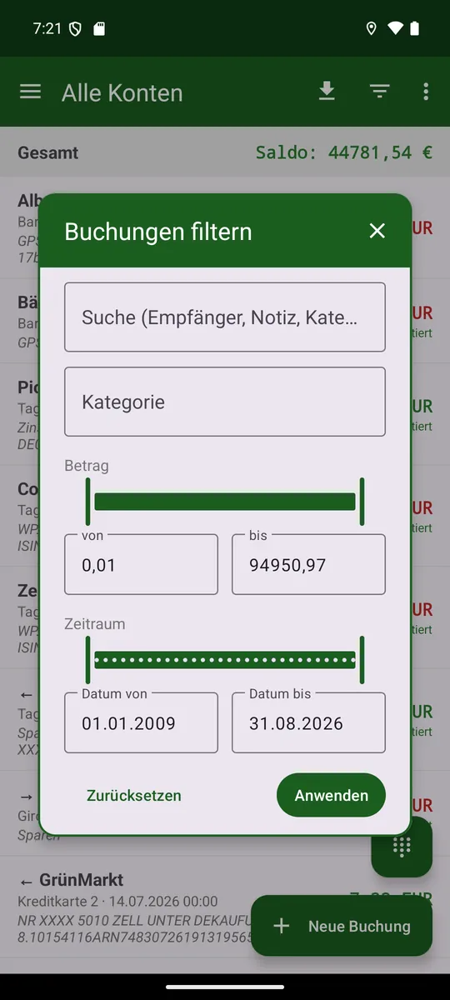
Quick search (tap the account name)
Quick search: Tap the account name at the top – it makes room for a search field. What you type narrows the list right away; it searches payee, note and category at once, anywhere in the word and regardless of case. The magnifier on the keyboard folds the field away again: the account name returns to its place, but the search stays in effect. Another tap on the name brings it back for editing – your search word is still in it.
Show everything again: As soon as something is filtered, the line «Filter active (23)» appears below the account name, with an ✕ in front of it. It clears in two steps: the first tap removes the quick search – the line stays and now shows what the funnel alone leaves. The second tap clears that too; the line then disappears and the list is complete again. That way, ending a search does not cost you the period or amount range you set up beforehand. If only one of the two is active, a single tap is of course enough.
The filter (funnel ▽)
The funnel in the title bar narrows the list. At the top sits a search field that searches payee, note and category at once – anywhere in the word and regardless of case. That way you can find a booking by its note as well. Below it follow category (as a tree), tag, amount and date from–to. The magnifier on the keyboard applies the filter right away – the «Apply» button sits at the end of this long dialog and thus below the keyboard. If you would rather set an amount or a period as well, just keep scrolling: the keyboard steps aside on its own. The quick search above and this filter apply together: set something here, then type up top, and you keep searching within what is already filtered. «Reset» clears both.
The filter applies to the list and the analysis. With one set, the ⋮ menu also offers «Export receipts», which writes the receipts of exactly that selection into a ZIP file.
Amount and period
For the amount, expenses count negative and income positive; the slider runs from the largest expense on the left to the largest income on the right, with a thin mark showing the zero in between. It moves in shares, not in amounts: the right thumb at 90 % cuts off the largest tenth – so a single outlier no longer stretches the whole slider. For an exact bound, type it into the field.
The date runs as a slider in whole-month steps; type an exact day into the field.
Radius (only with location)
At the bottom – only with location (GPS) switched on – sits the Radius button. Each tap steps through «off», 100 m, 500 m, 1 km, 10 km and back to «off». On a step only those bookings remain that were made within that radius of where you are now.
Where a booking's location comes from: the coordinates in its note, and where those are missing, the learned location of the payee in the alias. Your own position is captured once when you apply – so the list does not travel with you as you move on.
If no position is known yet the list stays empty and the title line shows «Filter active (0)». «Reset» restores «Radius off»; after that location no longer matters. Unlike the other criteria the radius applies to the list only, not to the analysis.
Special cases
The tag is only present when the app knows tags from the KMyMoney file; «All» clears the choice again. And with a category filter set, a split booking shows only the partial amount of that category.
13. Analysis
- Periods: day / week / month / year.
- Views: single account, place or total.
- With an account group selected in the drawer, it appears as its own view behind «Total» and «Total without portfolio»: only the accounts of that group, its portfolios included – the same figure as in the balance bar on the main page.
- Zoom by gesture: horizontal = number of bars, vertical = Y axis.
- Closed accounts count only in the total view (historical balance).

14. Where does my money go?
The Categories page (menu ⋮ → Categories) shows the expenses per category – as a pie chart and below it as a list, sorted descending by amount. It complements the analysis (Chapter 13), which only shows the development over time per account/place.
- Month/Year toggle: current month resp. current year.
- In both views you page through the periods by swiping – just like in the budget (right = back, left = forward); the header shows the displayed month resp. year centred and bold, with the previous and next one in grey to the left and right (tapping pages as well). Paging stops before the first booking period and after the current one.
- The chart uses the full width and at most half the screen height; the list below scrolls on its own while the chart stays visible.
- The slices are unlabelled; a tap shows category and amount in the centre, without a selection the total is shown there. The list additionally states the share in percent.
- The analysis covers all accounts and lists only categories with expenses.
- Split transactions count through their partial amounts (not twice), transfers are left out – the same data source as the budget page.

Include scheduled transactions (calendar icon)
The calendar toggle at the top right adds the scheduled expenses due in the period (Chapter 16) to the ones already made – including those that sit as a deduction inside a scheduled income, such as the capital gains tax on a dividend. Then:
- The sum per category grows by the scheduled share; the list sorts by the new sum.
- In the chart the already paid share appears in the category's strong colour, the scheduled share right next to it in the same, lighter shade – together they form one continuous sector.
- Rows with a scheduled share can be expanded (arrow on the right), showing «Already paid» and «Scheduled» separately.
- With the toggle on, the slider also pages into future months/years – which then show only scheduled values – up to the last scheduled occurrence.
Set colours (palette icon)
Each category has a fixed colour – regardless of its current position in the list. The palette icon at the top right opens the colour list: tapping a category opens the picker; «Default» restores the automatic colour. The assignment takes effect immediately in the chart and list.
15. Budget
The Budget page (menu ⋮ → Budget) puts the actual value against a per-category target. It answers the question: «Am I on plan?»
Where does the target come from?
- Import from KMyMoney (a button in the settings): if your .kmy contains a budget, its values are taken as the target — month-accurate (monthly and month-by-month budgets are stored per month). Such targets are not editable.
- Compute from history: sum of all previous years ÷ number of years with data. Automatic when the «compute budget internally» switch is on, otherwise via a button. These targets can be edited by a long press on a row.
Whether a category is income or expense follows from the .kmy file. A refund therefore reduces the expense category without turning it into income; a computed negative actual is clamped to 0.

Display
- Toggle year / month. The year view sums the months; the month view shows the displayed month's target against that same month's actuals. In month view you page through months with a swipe (or by tapping the grey previous/next month in the header).
- Toggle main categories only / with subcategories (a main category sums its subcategories).
- Income first, then expenses (large headers); main categories bold, subcategories indented. The right side shows «actual / target».
- Under each category a slim bar: green when on plan, red when behind. Its width shows the share of the target used.
When the bar turns green
Instead of a purely linear time comparison, the app learns each category's typical timing from the payment history. A one-time expense – a transit pass bought at the start of the month, say – is green as soon as it is within budget. Regular expenses such as groceries are still measured against the elapsed time. Without history the linear comparison applies; for income it is reversed.
16. Scheduled transactions
The Scheduled transactions page (menu ⋮ → Scheduled transactions, shown only in .kmy mode) shows your standing orders from KMyMoney as one chronological list by due date. It refreshes only through the pull-to-refresh gesture on this page, not with the normal account import.
- Short tap on a row: view the schedule.
- Long press: book it now.
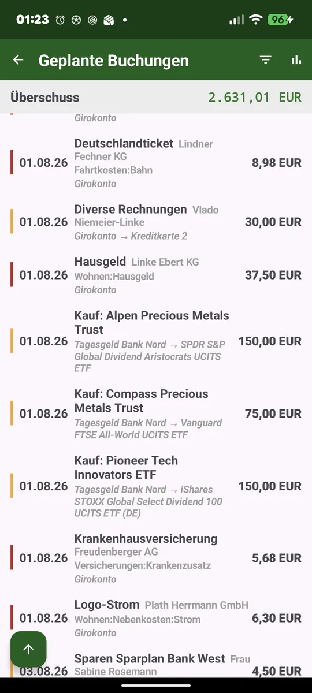
What the list shows
Each recurring schedule is expanded into its individual occurrences – a weekly bakery therefore appears several times, up to two years ahead. A coloured strip shows the type: green for deposit, red for payment, yellow for transfer.
Booking or skipping a schedule
A long press on a row opens the booking editor as a new booking, prefilled from the schedule. Check it, adjust if needed, save with «New booking». Alternatively the editor offers a «Skip booking» button: no transaction is created, but the date still counts as done.
Booked or skipped, the date disappears from the list, and on the next export the KMyMoney schedule moves on to the next due date.
Reminder for due transactions
The switch «Remind me of due transactions» in the settings (off by default) reports once a day when something is due; tapping the notification opens this page.
Balance strip (cycling)
At the top, a balance strip shows the total for the currently set filter. A tap cycles between surplus/deficit, total deposits, total bills and transfers.
Filter
The filter icon at the top right narrows the list, balance strip and chart – by type, account, name/payee and period.
Chart
The chart icon at the top right opens an analysis like the account view's: bars per due date (green deposit, red bill) and a development line that starts today at 0 and runs into the future. It inherits the list filter and can be zoomed and panned like the account chart.
17. Synchronizing: performing export and import
The actual sync with KMyMoney runs through a single symbol in the main screen's title bar – the export/sync symbol (down arrow).

Exporting bookings
Tap the export symbol ⬇. The app loads the current .kmy from the sync target, inserts your new bookings, makes a backup first (see below) and writes the file back. Each booking is exported only once and then marked «exported». In CSV mode one CSV file per account is uploaded instead.
Edited bookings. Change a booking that has already been exported and the next export won't add a new one – the existing transaction in the .kmy file is updated instead, no duplicate.
When the change does not arrive
If the old transaction is no longer in the file – deleted on the computer, say – the booking stays «edited»; nothing is inserted.
(Re-)importing accounts
Import is done selectively via the account drawer (long press):
- Long press on an account: imports/updates exactly that account.
- Long press on «All accounts» (or pull down): reloads everything – accounts, portfolios and scheduled transactions in one go.
- «Add account»: fetches an account not yet present from the .kmy, several at once tickable.
- Long press on the portfolio: updates securities and prices.
Securities buys and sells are imported as a transfer into/out of the security. Dividends stay normal income.
The import runs in the background – the UI stays usable, a yellow banner shows progress. A message appears only on error.
Backup before every export
Before every write-back the app automatically creates a timestamped backup of the .kmy in the «Backup» subfolder next to the original – a fallback in case something is ever wrong with the file.
Protection against overwriting
If somebody works in KMyMoney on the computer while the app exports, their changes must not be lost: if the file changed in the meantime, the export aborts and writes nothing – the bookings stay unexported and can be exported again after a fresh import, without any loss.
KMyMoney open on the computer
The reverse case is one the app cannot always prevent: if the file is open in KMyMoney while the app exports and KMyMoney saves afterwards, it writes its own state over the file – the bookings just transferred are gone, and the app will not send them again. KMyMoney does not check on saving whether the file has changed in the meantime. So close KMyMoney before exporting – or reopen the file afterwards before you save there.
From KMyMoney 5.2 on, the app detects this itself: KMyMoney places a lock file «filename.lck» next to the file when opening it, and if the app finds it on the server, the export stops without writing anything. This only works if the lock file actually reaches the server:
- Nextcloud with the sync client: only if the client transfers «.lck» files. The Nextcloud client does so by default; if you have added «*.lck» to its exclusion list, you lose the protection.
- SMB share or another WebDAV server: works as soon as KMyMoney opens the file through a file path – that is, if the shared folder is on the same computer KMyMoney runs on, or if the share is mounted as a drive (network drive on Windows, mounted share on Linux). If KMyMoney opens the file through an address such as «smb://» or «webdavs://», it works on a downloaded copy and creates no lock file.
- KMyMoney before 5.2 creates no lock file; closing it is the only protection.
- If the app reports a lock although KMyMoney is closed, it is left over from a crash. Opening and closing KMyMoney once clears it.
18. Wear OS (watch)
With the watch app you record an expense by voice right on your wrist. The watch only captures the text; processing and creating the booking happen on the phone.
- Three type buttons: income (green), transfer (yellow), expense (red). Then voice starts.
- Silent digit entry: enter an amount silently via the digits symbol.
- Wear tile: quick access as a tile.
- Default-place balance: below the buttons, the app shows the balance of the default place.
- Offline: bookings not yet transmitted are delivered automatically once the phone is reachable.
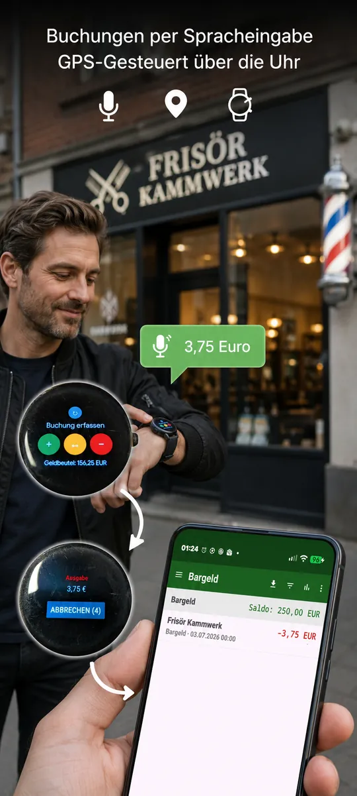
Switching account and place
Above «Record booking» a grey switch button cycles through the shown account; the next booking then targets that account. After a short while the selection reverts to the default place by itself.
When a reason appears instead of the balance
While bookings are not yet transferred, the reason takes the place of the balance, e.g. «Waiting for GPS» or «No connection to phone».
Recording offline (phone off or disconnected)
Speech recognition also works without the phone/network, provided an offline speech model is present on the watch – installed once via the setting «Install offline speech package on the watch». If offline speech fails, the watch automatically opens the number pad: type the amount, the booking is buffered and sent once the phone is reachable again.
Requirement: the phone and watch apps share the same signature (same key).
19. Settings (complete reference)
The settings are reached via the ⋮ menu at the top right – entry «Settings» at the very bottom. On first start the welcome assistant (Chapter 3) already sets the essentials; here all fields are described in screen order. Changes take effect on «Save» (language and dark mode immediately).

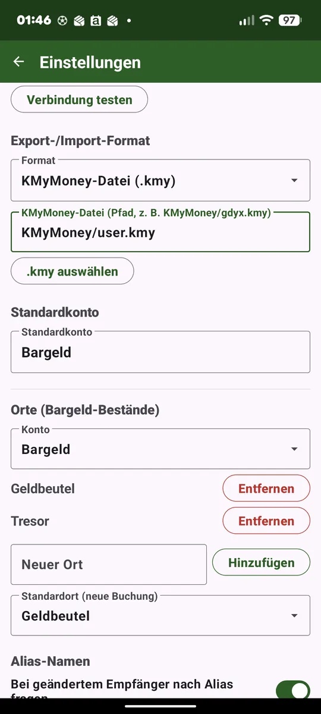
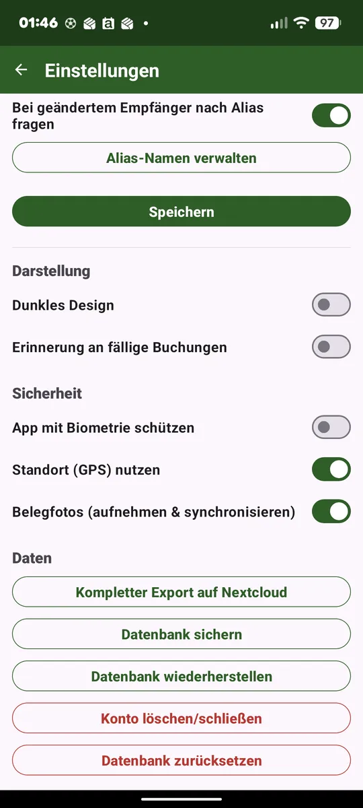
Language, number format and currency
- Language: German/English (more via a language file). Pre-selected from the phone on first start; the choice takes effect immediately. Via «Export/upload language template» you can maintain your own translation as a file.
- Currency: default currency symbol for accounts without their own currency (taken per account from the file on .kmy import).
- Number format: «1.234,56», «1,234.56» or «1234,56»/«1234.56» without grouping; plus the «Show currency symbol» toggle. Applies to all amounts in the app and on the watch; the export keeps a stable format.
- Dividends gross/net: whether portfolio dividends are settled gross (declared) or net.
- Read statements: allows reading the bank's PDF statements in the portfolio (default: off). When switched on the app states how many banks the recognition was measured against. The complete documentation is in Chapter 10.
- Budget in-app: compute the budget actuals from history instead of importing from KMyMoney (see Chapter 15).
- Install offline speech package on the watch (GitHub build with the Wear bridge only): lets the watch download the offline speech model of the chosen language so voice recording works offline too (see Chapter 18). Off → the number-pad fallback applies offline.
Date format: dates in the app follow the chosen language – «DD.MM.YYYY» in German, the customary notation in English and Spanish. If the chosen language matches the language of the device, its country counts as well: English is written «MM/DD/YYYY» in the USA but «DD/MM/YYYY» in the UK. There is no separate setting for this because the device already answers the question. The CSV export is unaffected and still writes «DD.MM.YYYY» – it follows the file, not the display.
Connection to your server (SMB / WebDAV / Nextcloud)
The most important setup step, so the app can exchange data with KMyMoney. Choose the server type and enter the access:
- Nextcloud: base URL of the server + app password (Nextcloud → Security → App password).
- WebDAV (generic): full DAV root URL, auth via HTTP basic.
- SMB/Samba: set up through a wizard – see below. SMB2/3.
- «Test connection» checks more than the credentials: the whole chain up to the write permission – see below.
Receipt folder: the folder next to the KMyMoney file that holds the receipt photos – «Belege» by default; if several profiles keep their file in the same folder, give each one its own name, otherwise each profile would take the other’s receipts for orphaned.
Setting up SMB/Samba (wizard)
With server type SMB/Samba a wizard replaces the address fields, so you don't have to remember host or share names:
- Search for servers. On opening, the app scans the local network automatically. Each hit is listed with its display name and IP address; «Search again» restarts the scan.
- Log in. Enter username and password of the server. The password is stored encrypted and never shown in clear text.
- Pick the share. The app reads the server's shares; clicking one fills the «Share name» field.
- Save. This becomes the address «smb://host/share». The target folder inside it is then chosen with «Browse folder» or «Choose .kmy».
When the server does not listen on port 445
Above the login fields sits a «Port» field. Leave it empty as long as the server uses the usual SMB port 445. If it announces a different one over Bonjour, that port is already filled in; if nothing answers there, the app also tries the default port 445 and corrects the stored address. The address then reads «smb://host:7777/share».
A share without a password
An empty user means guest. For a share without a password simply leave the password field empty – the app then continues as guest, even with a user name filled in.
Further details
The scan runs three ways at once: Bonjour/mDNS, a NetBIOS name query and a connection test on the SMB port. The servers found last time are remembered and shown right away when you open it again.
If the server belongs to a workgroup other than «WORKGROUP», the field is already pre-filled – the search names it below the server name whenever the server reports one. If it refuses to list its shares either, type the share name by hand; system shares such as IPC$ are hidden anyway.
«Enter server manually» brings back the classic fields for typing the address yourself. «Search for servers on the network» returns to the wizard at any time.
Workgroup or Windows domain: at home the workgroup is usually called «WORKGROUP» – it plays no role for signing in, Samba servers and NAS boxes only check user and password. It is different in a real Windows domain (Active Directory): there you enter the user as DOMAIN\user (or as «user@domain.local»). Without the domain the login may fail with «Username or password is invalid» even though the password is correct. For a Windows PC with a local account, «COMPUTERNAME\user» helps.
If something fails, the wizard names the reason: «Server not reachable», «Username or password is invalid», «The selected share is not available» or «Access to the folder was denied» – followed, in brackets, by the server's raw status code, so a report can actually be traced. «Server not reachable» only ever appears while no connection has been established yet. If the port field does not hold a number between 1 and 65535, it says so right away without trying to connect.
Test connection
The button «Test connection» – in the settings and in the first-start wizard, for every server type – checks far more than the credentials. It walks the whole chain, right up to the question that matters in the end: may the app write, rename and delete in this folder?
What you see while it runs
A check takes a few seconds, and when something really is wrong, every single step first waits out its timeout. That is why a yellow band appears below the button: on the left the step that finished last, with a green check or a red cross, on the right the one currently running. So you can always see how far it got and what it is working on – instead of a screen that simply sits still.
When everything works
Then one sentence is enough: «Connection successful». If you want the details anyway, «Show report» opens the full list.
When something is wrong
Then the report appears right away: for every step whether it worked, how long it took and, on failure, the raw status code – plus, where possible, what it means. An «HTTP 401», for instance, names the most common cause straight away: with two-factor authentication switched on, this field needs an app password, not the account password.
«Copy report» puts the result on the clipboard – meant for sending along with a bug report. The report contains neither the password nor the user name: the user appears only as «set» or «empty», and in the Nextcloud address as «<user>». Server, port and path layout are in there in plain text – without them nobody could help you from a distance.
The steps for SMB/Samba
The whole chain runs in one login – just as normal operation does:
- Connect (noting it if the default port was used instead of the configured one),
- Negotiate: which SMB dialect, whether the server requires signing and whether encryption was negotiated,
- Log in: as a user or as guest, encrypted or not,
- Read shares, open share, read folder,
- Write, rename and clean up in the folder – using a tiny test file that disappears again right away,
- Check the file and, if it exists, whether it is writable (.kmy mode only).
The steps for Nextcloud and WebDAV
- Address: how the app reads your server address. This is also where the most common typo shows up – if with server type «Nextcloud» the path «/remote.php/dav/…» is already part of the base URL, it would end up in there twice.
- Reachability: whether anybody answers there at all, and whether they speak WebDAV. If you accidentally entered the address of the web interface, it says so here.
- Redirect: where the server forwards you, if it does (from «http» to «https», say).
- Log in: user and password. A refused login is told apart by reason – wrong credentials, a protective layer in front of the server, or a wrong address are different things.
- Read folder, then write, rename and clean up in it,
- Check the file with its size, and the version tag (ETag) – if the server supplies none, the app cannot tell when writing back whether somebody else changed the file in the meantime (.kmy mode only).
Why renaming and deleting are part of it
When transferring, the app first writes your KMyMoney file in full under a temporary name and only then has it put in place – that is the only way an interruption (a dead spot, a timeout) cannot half-overwrite your file and leave it unreadable. The folder needs all three permissions for that. A folder where creating and deleting work but renaming does not would otherwise only surface on the first real transfer – that is, after you have already recorded bookings.
Export mode
- .kmy mode: writes new bookings straight into the KMyMoney file (including splits and transfers) and imports accounts/bookings as well as the portfolio from it. «Choose .kmy» opens a file browser (subfolders, «..» to go back).
- CSV mode: exports one CSV file per account (each booking only once); the target folder and import folder are set here.
Without a configured sync target, export goes locally into a folder you choose. How the sync runs is in Chapter 17.
Default account and places
- Default account: pre-selection for new bookings (also for widget and watch). Selectable only once accounts exist.
- Places per account: per account you can create cash places and set a default place (see Chapter 8).
Alias names
The «Prompt» toggle controls whether the app offers to learn an unknown payee as an alias after you speak (existing aliases still apply). Via «Manage alias names» you create, edit and delete aliases by hand – with spoken term, real payee, booking type, account, categories and location (via «Open map» on an OpenStreetMap map). The «prefer» toggle (★) puts an alias ahead of the booking search; the same term may point to several payees distinguished by location.
Appearance
- Dark mode: light/dark (takes effect immediately).
- Reminder for scheduled bookings: reminds once a day of scheduled bookings due today (off by default; see Chapter 16).
Security & privacy
- App lock: optional via biometrics/device credential (fingerprint, face, PIN, pattern, password) – on start and when returning from the background. When the app hands over to another app itself – camera, gallery, file picker, speech input – returning within five minutes does not ask again. Stay away longer and the lock is back.
- Location (GPS) switch (default off): controls all location use. Off = no permission prompt, no GPS note, no amount-only entry, no alias location. The position is used locally only, never sent to a service.
- Use amount for payee suggestions (default off): on = the amount helps decide where several payees share a location – in the number pad the name shown changes with the amount, and the booking editor pre-fills an unambiguous payee. Off = both stay quiet; the number pad shows the nearest payee, which you change by tapping. Regardless of this switch, plain voice entry without a payee – on the phone as from the watch – always uses the amount, because there is nothing to choose there.
Data
- Export all and Create/restore backup (see below).
- Manage accounts (delete/close): a multi-select lists all accounts with status (Active/Closed). The bottom row has (context-dependent) Close/Reopen and, on the right, Delete; Close only at balance 0, Reopen only for closed accounts. A closed account no longer appears anywhere – only in the total analysis view does its historical balance still count.
- Reset data: deletes the local database (a fresh start like the first time – the welcome assistant appears again afterwards).
Creating and restoring a backup
«Create backup» writes data and settings into a ZIP file: the database (bookings, accounts, place journal, portfolio, schedules) and all settings – including the places per account, the category colours and the server access. Beforehand the app asks two things:
- Include the server password? No by default – then the password appears nowhere in the file and is entered once after restoring.
- Backup password (optional, entered twice): it encrypts the whole file (AES-256-GCM, file extension .abk instead of .zip). Without a password it stays a plain ZIP.
On «Restore backup» the app first asks for the backup password if needed, and then what should come back: data only, settings only or both. That way a broken configuration can be repaired without touching the recorded bookings. The app restarts afterwards. Receipt photos are not part of the backup – once uploaded they live on the server.
When switching devices this backup is the only way. Android does not include this app’s data in its own backup – neither in the cloud nor when transferring to a new device. That is deliberate: bookings, receipts and the server access should leave this device only for where you send them yourself. So create a backup before the switch and restore it on the new device.
20. CSV format (export)
German locale: column separator «;», decimal separator «,», date DD.MM.YYYY, UTF-8. Split bookings are written as one line per category.
Datum;Empfänger;Konto;Typ;Betrag;Notiz;Kategorie 29.06.2026;Metzgerei;Bargeld;Ausgabe;-7,30;Mittagessen;Lebensmittel
No guarantee for every bank: this recognition works with general rules rather than code written specifically for each institution – a fully tailored recognition for every bank would need its own code per bank, the way professional payment apps with a dedicated team can offer. As a one-person project, this app cannot provide that. With unusually structured statements the recognition can therefore fail or suggest wrong values – always check the suggested values before saving.
21. Disclaimer
This app is provided as-is, with no warranty. In particular, there is no guarantee that the .kmy file remains fully valid after an export. Thanks to the automatic backup before every export, however, you always have a fallback. Keep your own regular backups as well.